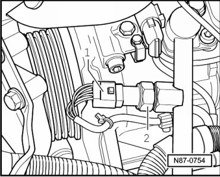
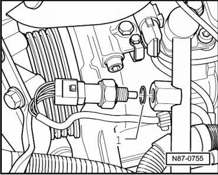

Refrigerant Temperature Sensor: Service and Repair
Refrigerant Circuit
Refrigerant Temperature Sensor
Removing
• The Refrigerant Temperature Sensor (G454).
CAUTION!
There is a danger of ice-up.
Refrigerant leaks out if refrigerant circuit is not discharged.
Refrigerant must be extracted before opening the refrigerant circuit. If the refrigerant circuit is not opened within 10 minutes after extracting it, pressure may build up in the circuit again. The refrigerant must be extracted again.
- Extract refrigerant circuit, e.g. using A/C Service Station (VAS 6007A), only then open the refrigerant circuit.
- Observe notes, refer to --> [ Engine Compartment Refrigerant Circuit Components, 2 Zone and 4 Zone ] Engine Compartment Refrigerant Circuit Components, 2 Zone and 4 Zone.
- Disconnect connector - 1 -.

- Remove the Refrigerant Temperature Sensor (G454)- 2 - from the A/C compressor refrigerant line.
• Counterhold the threaded connection with a suitable tool when loosening and tightening.
Installing
Installation is carried out in the reverse order, when doing this note the following:
- Replace the o-ring - 1 -.
The Refrigerant Temperature Sensor (G454) tightening specification is 8 ± 1 Nm.

• Counterhold the threaded connection with a suitable tool when loosening and tightening.
- When installing, note position of O-ring - 1 -.